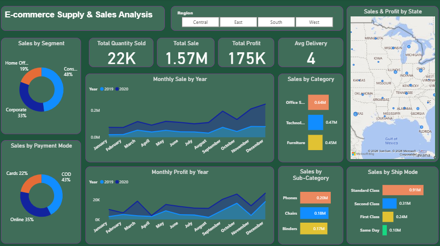
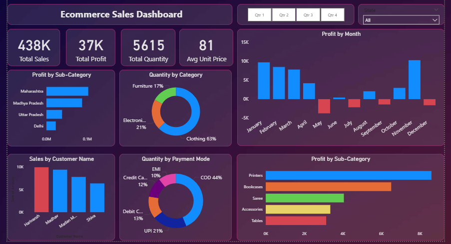
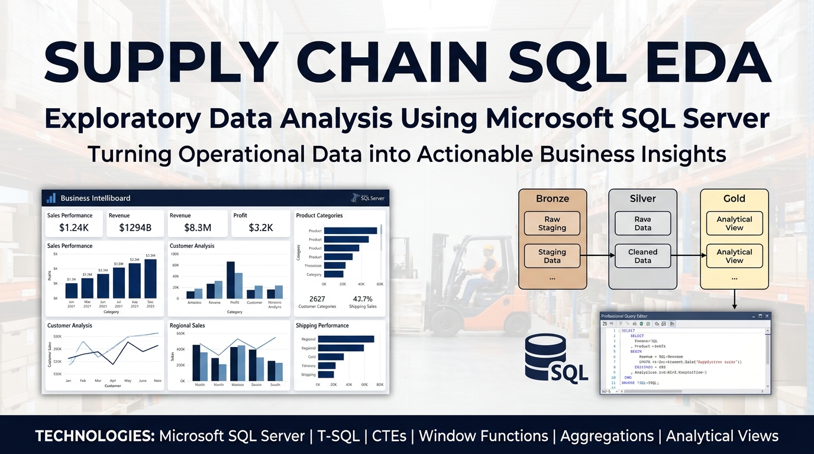
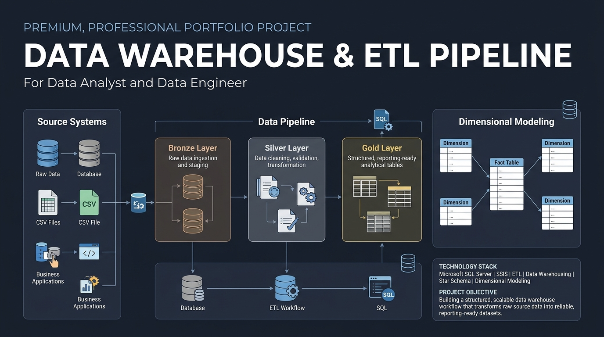
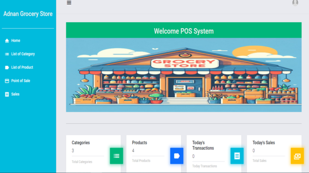
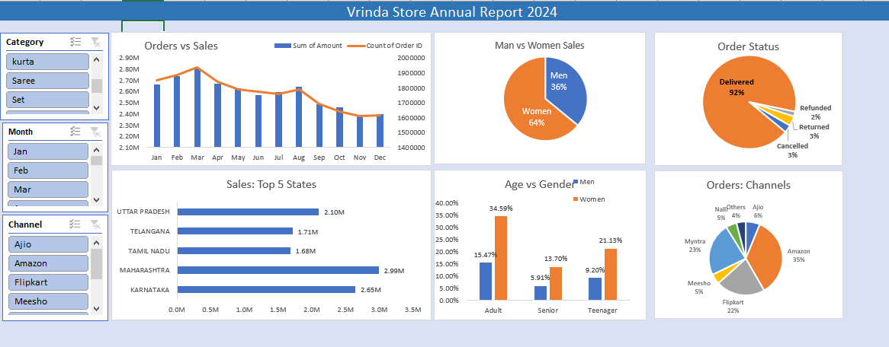

↗
Sales & Revenue Analytics
Analyze sales trends, product performance, revenue mix, and profitability indicators to reveal what is changing and where to investigate.
SQLExcelPower BI
I'm Muhammad Adnan a Data Analyst and BI Developer specializing in Power BI, SQL Server, and Excel. I work with retail, e-commerce, and supply chain data to uncover insights, track business performance, and support informed decision-making.

Sales · Profitability · Inventory · KPIs
Practical reporting and analysis that turn data into meaningful business decisions—not just dashboards.
Analyze sales trends, product performance, revenue mix, and profitability indicators to reveal what is changing and where to investigate.
Build clear KPI dashboards with data models, interactive filters, useful measures, and a layout designed around stakeholder questions.
Explore product movement, stock patterns, category performance, and inventory questions to support more informed purchasing decisions.
Query, clean, transform, join, and summarize structured data using readable SQL workflows and business-focused outputs.
Structure repeatable data preparation steps and warehouse concepts, from raw/staging data toward cleaner analytical models.
Organize metrics into consistent reports that help users review performance, spot exceptions, and ask better follow-up questions.
Explore my projects in Power BI, SQL Server, retail analytics, e-commerce, supply chain, and data engineering.
Business Question: How do sales, profitability and product performance vary across categories, segments and time?
Approach: Analyze sales data, develop KPIs, create DAX measures and build interactive Power BI visualizations.

Business Question: Which products, customer segments and sales patterns deserve management attention?
Approach: Explore transaction data, clean records, analyze sales metrics and develop meaningful visual reports.

Business Question: What patterns can be identified across logistics, shipment, commodity, transportation and operational data?
Approach: Use SQL Server, joins, aggregations, CTEs, window functions and exploratory data analysis.

Goal: Build a structured data warehouse workflow from raw source data to reporting-ready tables.
Approach: Apply SQL Server, ETL concepts, Bronze/Silver/Gold architecture and dimensional modeling.

Goal: Develop a lightweight point-of-sale and inventory management application.
Approach: Use Python, Django and SQLite to explore transaction management, inventory records and application workflows.

Goal: Explore retail sales data and identify useful sales and customer patterns.
Approach: Excel data cleaning, pivot tables, charts and summarized reporting.
I'm Muhammad Adnan, a Data Analyst and BI Developer based in Nankana Sahib, Punjab, Pakistan.
I specialize in transforming structured data into meaningful reports and interactive dashboards using SQL Server, Power BI, Excel and Python
My portfolio includes projects in retail and e-commerce analytics, supply chain analysis, data warehousing, ETL, and inventory management systems.
I'm continuously developing my skills in data modeling, SQL analysis, dashboard development, Python-based data exploration, and business intelligence.
My goal is to deliver clear, reliable, and actionable insights while communicating findings honestly and effectively.
Skills are grouped by capabilities rather than subjective percentage ratings.
Build dashboards and communicate business performance through data visualization.
Query, clean, and analyze structured data to answer business questions.
Prepare, summarize, and present data using spreadsheets and reports.
Use foundational Python libraries and statistical methods for data exploration.
Understand data transformation, pipeline development, and dimensional modeling.
Use development tools and foundational technologies for application workflows and continued learning.
I follow a simple, practical approach to every project. First, I understand the problem, then work through the data, find what matters, and communicate the results in a way that makes sense.
Get clear on the problem, what needs to be answered, and what the business wants to achieve.
Explore the data, fix inconsistencies, handle missing values, and make sure it's ready for analysis.
Use SQL, Excel, Python, or Power BI to explore trends, uncover patterns, and build useful reports or dashboards.
Turn the results into clear visuals and practical takeaways, explaining what the data shows and what decisions it can support.
Every business has different challenges. I use data to help make those challenges easier to understand and find answers that support better decisions.
I help businesses understand their sales and inventory data, find which products are performing well, track sales trends, and identify areas that may need attention. My goal is to make everyday business decisions easier with clear reports and useful insights.
I help businesses get a better picture of their online sales by exploring revenue trends, product performance, and customer buying patterns. This helps highlight what's working, what's changing, and where there's room for improvement.
I work with supply chain and operational data to understand shipment activity, track performance, and spot possible delays or inefficiencies. I use SQL and data modeling to organize information and make it easier to understand.
I tailor how I present my work to each client's needs while staying honest about my skills, projects, and experience.
I offer professional data analytics, dashboard development, and data engineering services to help businesses make data-driven decisions. Let's discuss your project and find the right solution for your needs.